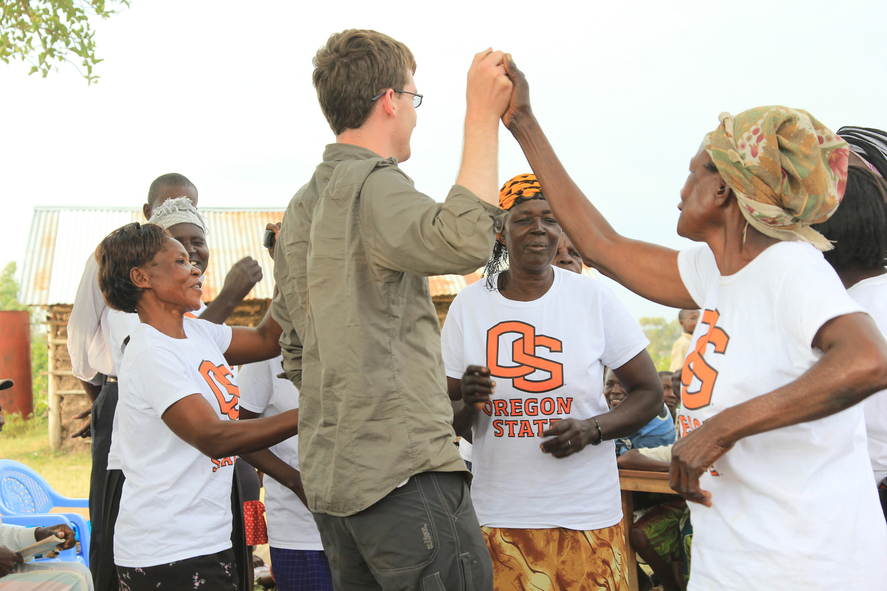
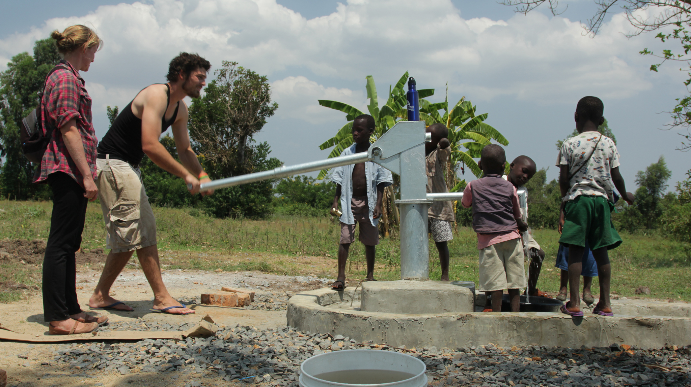
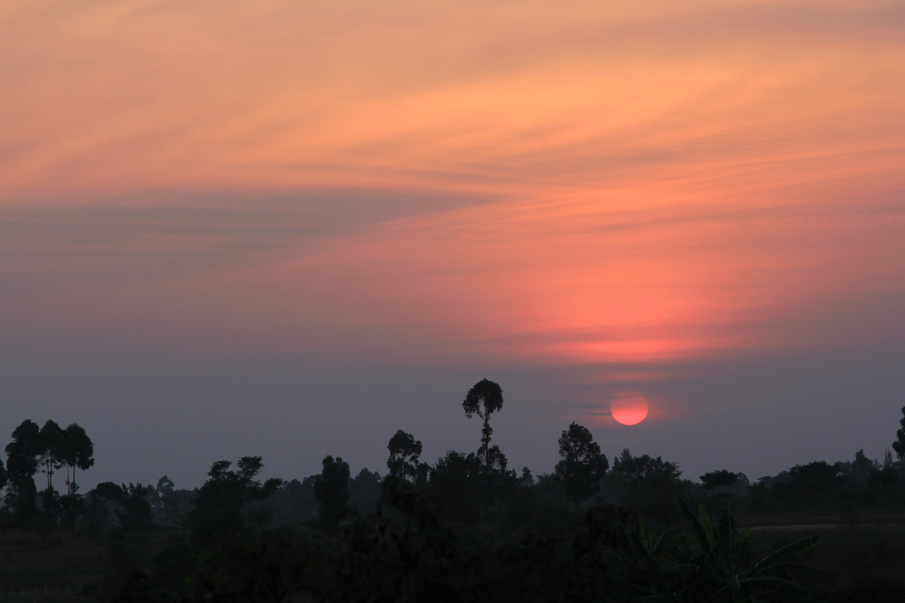

Hello, world!
POSTED 10 JULY 2013
To all two of you reading this, I'd like to introduce you to my blog. My name is Zach and I am a student at Oregon State University. At the moment I'm on a summer gig, living in San Francisco with my brother Colin (the handsome fellow below) and working as an intern for IDEX. Without Colin's willingness to host me for the summer this internship would not be possible. So, to you sir, thank you.

As a student I'm interested in poverty. I studied ecological engineering as an undergraduate and volunteered for Engineers Without Borders at OSU. As an EWB volunteer I worked on a water project in Lela, a small village in western Kenya. Working in Lela convinced me to devote my career to poverty alleviation.
 Without a doubt the end of extreme poverty is within reach during my generation's lifetime. The number of people living in extreme poverty has fallen from about two billion in 1990 to about one billion today. If history repeats itself, extreme poverty will be completely eradicated by 2030.
I would like to be a part of the transition to a world free of poverty. I'm currently studying public policy as a graduate student at OSU with a focus on international policy. In September I will leave on a Boren Fellowship for Kenya where I will be learning Swahili and conducting research for my master's thesis for nine months.
Which brings me to the purpose of this blog. Having the opportunity to return to Kenya is both humbling and exciting. I owe a great deal to my friends, family, and mentors. While I'm abroad I hope to keep everyone updated on my progress.
As my departure date approaches, I'll be writing in greater depth about my preparations, research and language study plans, and some of the people who have been instrumental in helping me get to where I am today. Stay tuned...
